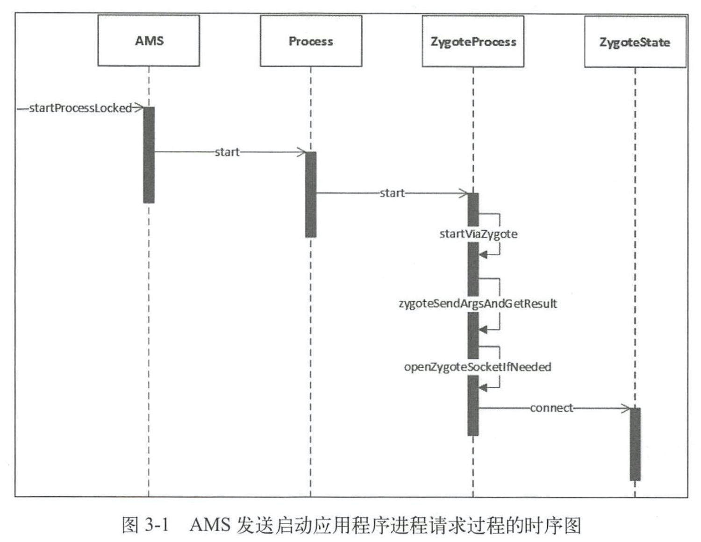
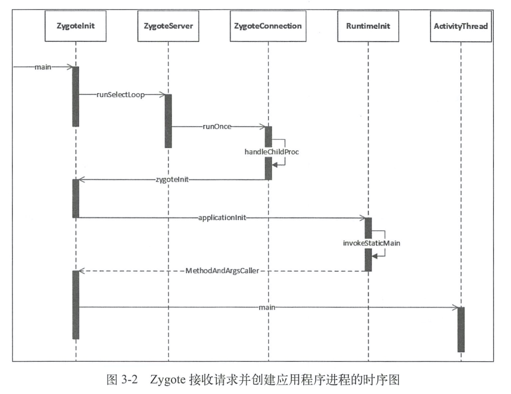

3.1 应用程序进程简介
要想启动一个应用程序，首先要保证这个应用程序所需要的应用程序进程已经启动。AMS在启动应用程序时会检查这个应用程序需要的应用程序进程是否存在，不存在就会请求Zygote进程启动需要的应用程序进程。在2.2节中，我们知道在Zygote的Java框架层中会创建一个Server端的Socket,这个Socket用来等待AMS请求Zygote来创建新的应用程序进程。Zygote进程通过fock自身创建应用程序进程，这样应用程序进程就会获得Zygote进程在启动时创建的虚拟机实例。当然，在应用程序进程创建过程中除了获取虚拟机实例外，还创建了Binder 线程池和消息循环，这样运行在应用进程中的应用程序就可以方便地使用Binder进行进程间通信以及处理消息了。
3.2 应用程序进程启动过程介绍
3.2.1 AMS发送启动应用程序进程请求

3.2.2 Zygote接收请求并创建应用程序进程
